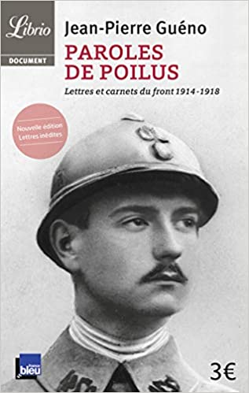

Ils avaient dix-sept ou vingt-cinq ans et étaient palefreniers, boulangers, colporteurs, ouvriers ou bourgeois. Ils devinrent soudainement artilleurs, fantassins, brancardiers... Voyageurs sans bagages, ils durent quitter leur femme et leurs enfants, revêtir l'uniforme mal coupé et chausser les godillots cloutés... Sur huit millions de mobilisés entre 1914 et 1918, plus de deux millions de jeunes hommes ne revirent jamais le clocher de leur village natal. Plus de quatre millions subirent de graves blessures. Huit mille personnes ont répondu à l'appel de Radio France visant à collecter les lettres, jusqu'ici éparpillées, de ces poilus. Cet ouvrage en présente une centaine. Des mots écrits dans la boue et qui n'ont pas vieilli d'un jour. Des mots déchirants, qui devraient inciter les générations futures au devoir de mémoire, au devoir de vigilance comme au devoir d'humanité...
.
STOCK=7
PRIX:12$

L'édition:Jean-Pierre Guéno
À propos de Jean-Pierre Guéno
Ecrivain, Historien, Jean-Pierre Guéno a dirigé le développement culturel de la Bibliothèque Nationale pendant 7 ans aux côtés d'Emmanuel Le Roy Ladurie, puis les Editions de Radio France pendant 12 ans. Il a également été directeur adjoint de la communication de La Poste. Il a été le directeur de la Culture des Musées des Lettres et Manuscrits de Paris et de Bruxelles. L'auteur de « Paroles de poilus », de « Paroles de Verdun », de « Visages de Saint-Exupéry », de « Paroles d'exode » et de « Dans la peau du soldat inconnu » a publié une soixantaine d'ouvrages.
Cet ancien élève de l'École Normale Supérieure de Saint-Cloud aime à rappeler que l'histoire n'est pas seulement écrite par les têtes d'affiches de nos livres de classes, mais aussi et surtout par ces obscurs que furent nos ancêtres. Il aime à se définir comme un « passeur de mémoire ».
Les différentes versions de Paroles de poilus ont trouvé 3 millions de lecteurs.